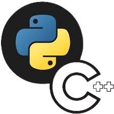
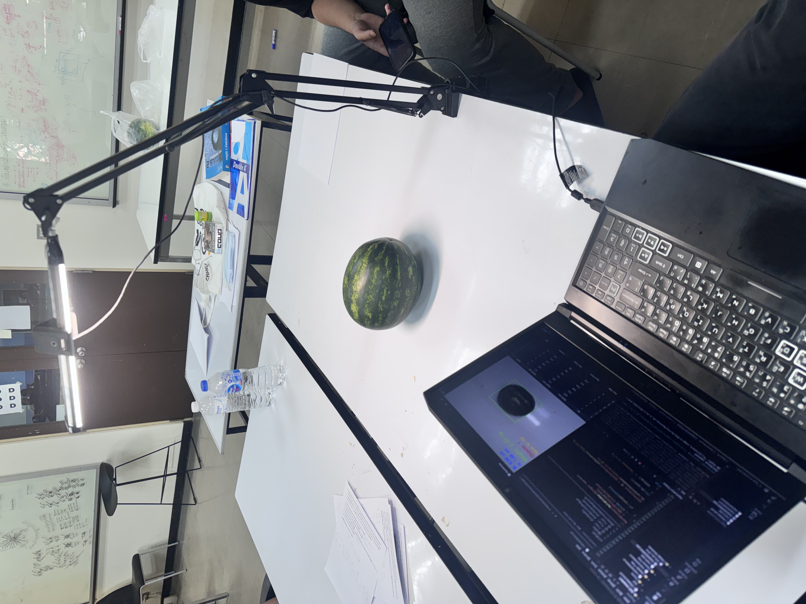

Pobphut Kungwong
ยินดีที่ได้รู้จักครับ ผม พบพฤทธิ์ กุงวงศ์ ชื่อเล่น : ม่อน
Programming
มีประสบการณ์ในการเขียนโค้ดภาษา Python และ C++ โดยเคยศึกษาโครงสร้างภาษาพื้นฐานและนำไปประยุกต์ใช้ในการทำโครงงานและแก้โจทย์ปัญหาทั่วไปในรายวิชาเรียนExperience
มีประสบการณ์ร่วมพัฒนาโครงงานในรายวิชา Computer Programming โดยออกแบบและพัฒนาระบบประมวลผลภาพ (Computer Vision) ผ่านกล้องถ่ายภาพ เพื่อคำนวณและประเมินน้ำหนักของแตงโมบนสายพานลำเลียงอัตโนมัติ